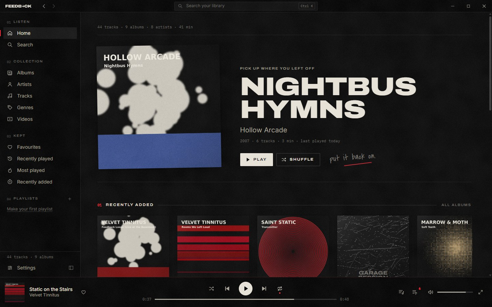
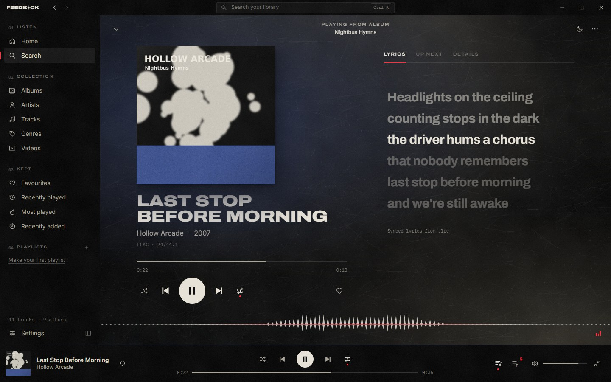
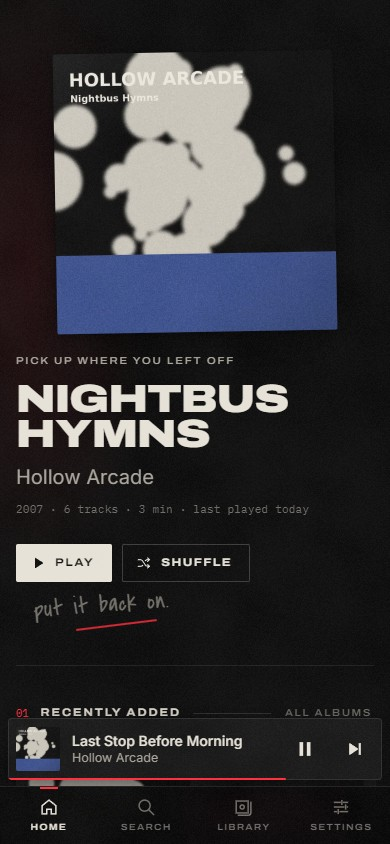
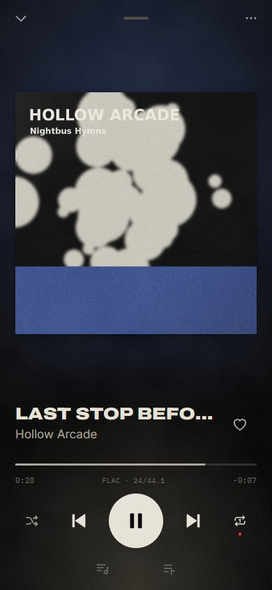
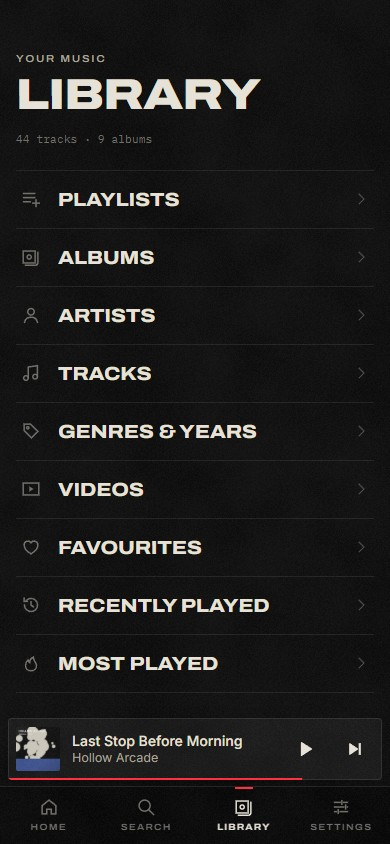
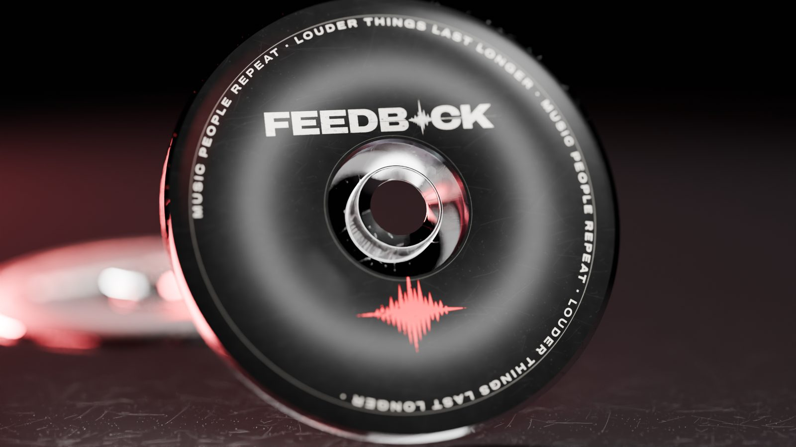
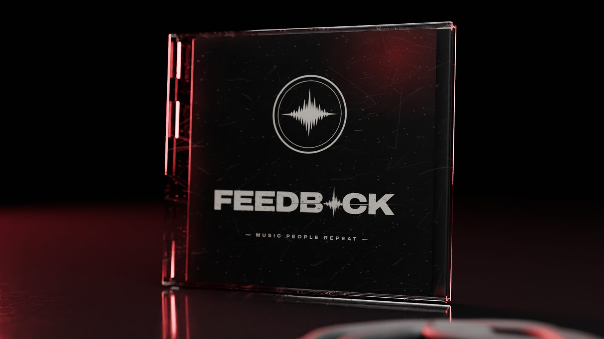

A player for the music you own. Rips, downloads, bootlegs, videos — kept in your folders, played properly, nothing uploaded.
FEEDBACK reads the tags and artwork already in your files and builds albums, artists, genres and years. It watches the folder, so new rips just show up. Search is instant because it never leaves your computer.


.lrc files, plain lyrics from .txt or the file's own tags.Turn on phone access and your iPhone connects straight to your computer, encrypted, with a code you pair once. Browse everything at home. Save albums to the phone and they play with no signal.
Nothing goes through the internet. Revoke a phone any time.





Windows 10 or 11, 64-bit. Run FEEDBACK_0.1.0_x64-setup.exe. The installer isn't code-signed yet, so Windows SmartScreen may say it's from an unknown publisher — choose More info → Run anyway.
FEEDBACK doesn't download, rip or unlock music from streaming services. It plays files you have.